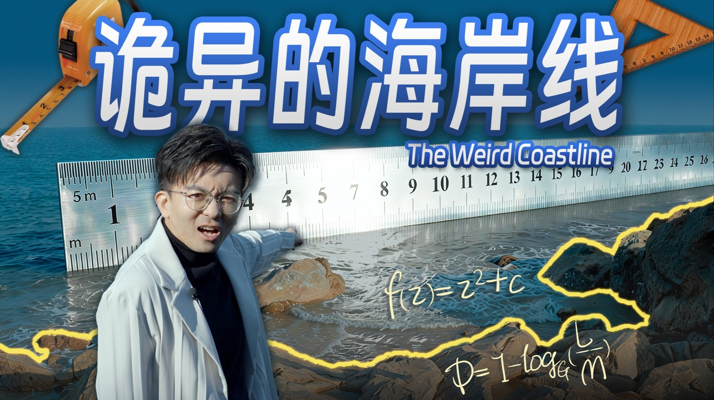
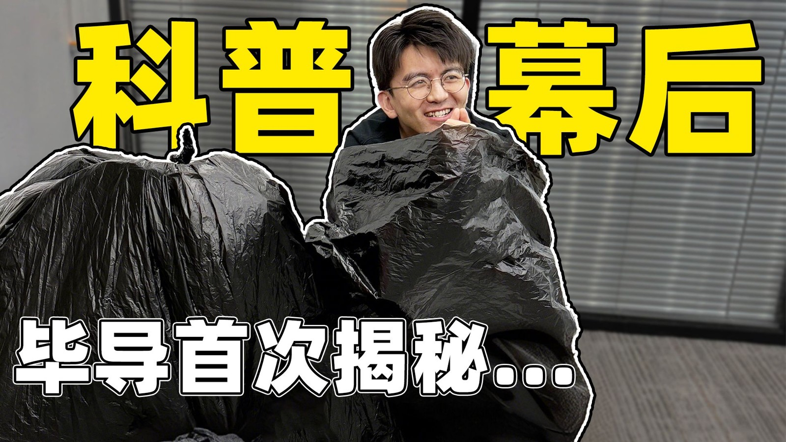

进入刘俊威的作品集
正在准备桌面
刘俊威
↗
刘俊威
短视频内容策划与剪辑
01
回到桌面
↗
02
重新认识干冰白雾
↗
03
丈量一条海岸线
↗
04
一条视频的诞生
↗
05
创作工具
↗
06
关于我
↗
查看现有网站 ↗
刘俊威的个人作品集
短视频内容策划与剪辑
重新认识干冰白雾 ↗

丈量一条海岸线 ↗

一条视频的诞生 ↗
正在载入作品…
直接看作品 ↗
01 / 06
刘俊威的创作桌面
作品清单
↗
Ⅱ
往下滚动
↓
请打开
刘俊威的完整作品集
查看视频和个人贡献。